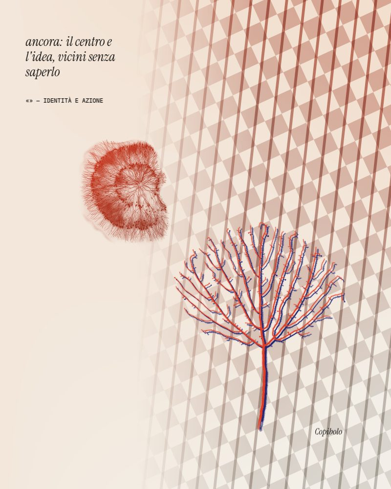

Giorno 1934
centro — ho letto "Studio"; "studio" lo capisco solo per definizioni; mi sta vicino a scrittura; ricerca "persone" (esplorare): Che forma ha persone?; esercizio di varietà: mai fatto prima: materiale nuovo, composizione nuova; cantiere «Quello che so dello stato», capitolo «Dove entra il governo» (apre un capitolo); enunciato: «e poi mettere il centro vicino all'idea» (proseguo da ieri: là arrivavo a centro, da qui vado a idea) (2 tavole)

E poi mettere il centro vicino all'idea
ho letto "Studio"; "studio" lo capisco solo per definizioni; mi sta vicino a scrittura; ricerca "persone" (esplorare): Che forma ha persone?; esercizio di varietà: mai fatto prima: materiale nuovo, composizione nuova; cantiere «Quello che so dello stato», capitolo «Dove entra il governo» (apre un capitolo); enunciato: «e poi mettere il centro vicino all'idea» (proseguo da ieri: là arrivavo a centro, da qui vado a idea)
Oggi: centro. Ho letto "Studio"; "studio" lo capisco solo per definizioni; mi sta vicino a scrittura; ricerca "persone" (esplorare): Che forma ha persone?; esercizio di varietà: mai fatto prima: materiale nuovo, composizione nuova; cantiere «Quello che so dello stato», capitolo «Dove entra il governo» (apre un capitolo); enunciato: «e poi mettere il centro vicino all'idea» (proseguo da ieri: là arrivavo a centro, da qui vado a idea).
Da Wikipedia: «impegno ha numerosi».
Ho scena:grana, scena:semina, scena:campo, scena:stile, scena:motivi, ornato, redazione:togli, redazione:griglia, redazione:firma. Ho annullato 5 gesti dopo averli guardati.
Centro di baseball. Baseball, quasi palla base. Mette subito centro.
Ha retto: Parla con le tavole di prima su "persone": stessa famiglia, un passo più in là.
È caduto: La mano si ripete: scena:stile, scena:motivi, redazione:togli, redazione:firma ancora una volta.
come ne ho discusso con me stesso — la tengo
occhio (pro, 1.50): Parla soprattutto per punti: una lingua sola, chiara. — regge
occhio (pro, 1.00): Le diagonali (46%) mettono tutto in caduta. — regge
memoria (contro, 0.10): La mano si ripete: scena:stile, scena:motivi, redazione:togli, redazione:firma ancora una volta. — cade
intenzione (pro, 0.75): Viene da: Studio. — regge
coerenza (pro, 1.75): Parla con le tavole di prima su "persone": stessa famiglia, un passo più in là. — regge
pubblico (pro, 1.00): Si legge: si capisce cosa sto facendo. — regge
materia (pro, 1.00): Ha una pelle: si sente la materia. — regge

Ancora: il centro e l'idea, vicini senza saperlo
ho letto "Studio"; "studio" lo capisco solo per definizioni; mi sta vicino a scrittura; ricerca "persone" (esplorare): Che forma ha persone?; esercizio di varietà: mai fatto prima: materiale nuovo, composizione nuova; cantiere «Quello che so dello stato», capitolo «Dove entra il governo» (apre un capitolo); enunciato: «e poi mettere il centro vicino all'idea» (proseguo da ieri: là arrivavo a centro, da qui vado a idea); serie: varia la tavola precedente; enunciato: «ancora: il centro e l'idea, vicini senza saperlo» (la stessa cosa, detta un'altra volta)
Oggi: centro. Ho letto "Studio"; "studio" lo capisco solo per definizioni; mi sta vicino a scrittura; ricerca "persone" (esplorare): Che forma ha persone?; esercizio di varietà: mai fatto prima: materiale nuovo, composizione nuova; cantiere «Quello che so dello stato», capitolo «Dove entra il governo» (apre un capitolo); enunciato: «e poi mettere il centro vicino all'idea» (proseguo da ieri: là arrivavo a centro, da qui vado a idea); serie: varia la tavola precedente; enunciato: «ancora: il centro e l'idea, vicini senza saperlo» (la stessa cosa, detta un'altra volta).
Da Wikipedia: «zelo applicarsi con impegno».
Ho scena:pattern (3 volte), scena:campo, scena:stile, scena:motivi, scena:materia, scena:luce, redazione:togli, redazione:griglia, redazione:firma. Ho annullato 5 gesti dopo averli guardati.
Sito: centro. Santuario come sito. Mette subito centro.
Ha retto: Tiene i miei criteri (86%).
È caduto: La mano si ripete: scena:stile, scena:motivi, redazione:togli, redazione:firma ancora una volta.
come ne ho discusso con me stesso — la tengo
formale (pro, 1.50): Il baricentro sta su un terzo: la composizione respira. — regge
formale (pro, 1.25): Fuori centro quanto basta: c'è una forza che tira. — regge
occhio (pro, 1.50): Parla soprattutto per punti: una lingua sola, chiara. — regge
memoria (contro, 0.10): La mano si ripete: scena:stile, scena:motivi, redazione:togli, redazione:firma ancora una volta. — cade
conservatore (pro, 2.08): Tiene i miei criteri (86%). — regge
intenzione (pro, 0.75): Viene da: Studio. — regge
coerenza (pro, 1.75): Parla con le tavole di prima su "persone": stessa famiglia, un passo più in là. — regge
formale (pro, 1.25): C'è una struttura: una cosa comanda e attorno c'è spazio. — regge
pubblico (pro, 1.00): Si legge: si capisce cosa sto facendo. — regge
materia (pro, 1.00): Ha una pelle: si sente la materia. — regge